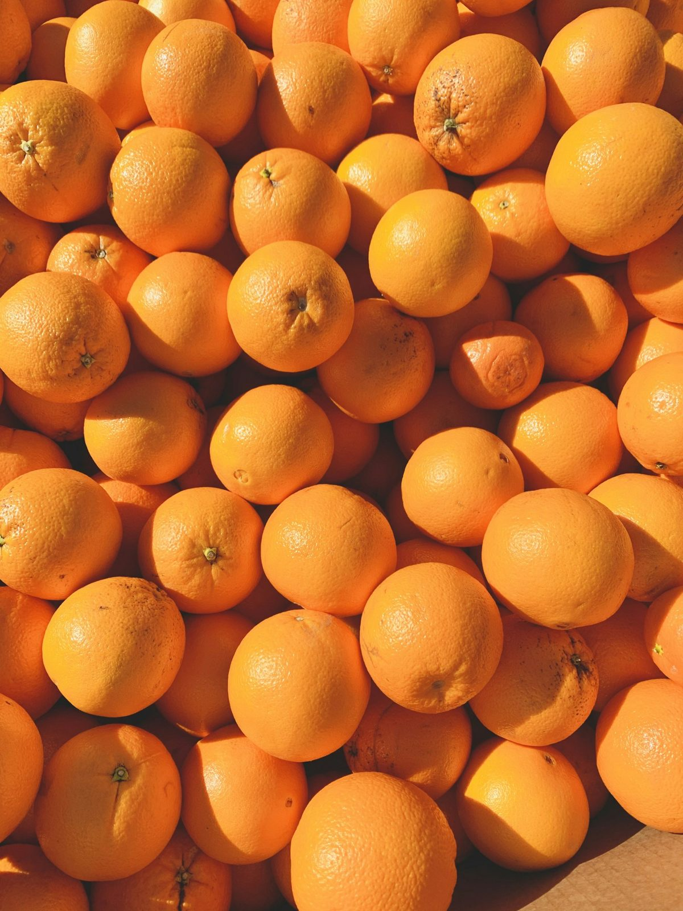

Cikk · C-vitamin
C-vitamin: antioxidáns, kollagén, vas, és amit a kapszula nem ígérhet
A C-vitamin vízben oldódó tápanyag. A sejtvédelem és a skorbut nem ugyanaz a mondat, mint a rákmegelőzés.

Mi a készítmény vagy a téma?
A C-vitamin, más néven aszkorbinsav, vízben oldódó tápanyag. A szervezetben antioxidánsként segít védeni a sejteket a szabad gyökök károsodásától. Kollagén készítéséhez is kell, ez a fehérje a sebgyógyuláshoz szükséges. Javítja a növényi ételekből származó vas felszívódását, és segíti az immunrendszer működését.
Készítményként multivitaminban és önállóan is előfordul. Ez a magazin nem adagol.
Kinek szól?
A NIH szerint az Egyesült Államokban a legtöbben ételből és italból eleget kapnak. Gyakrabban eshet szűkösen a dohányzó és a passzív dohányzásnak kitett ember, mert a füst növeli a szervezet C-vitamin-igényét.
Aki heteken át nagyon kevés C-vitamint kap, skorbutot kaphat: fáradtság, ínygyulladás, apró bőrpontok, ízületi fájdalom, rossz sebgyógyulás, dugóhúzó-szerű szőr. A NIH szerint a hiány az Egyesült Államokban és Kanadában ritka.
Mit mond a kutatás?
A gyümölcsben és zöldségben magas C-vitamin-bevitelű embereknél alacsonyabb lehet több ráktípus kockázata. A NIH szerint a C-vitamin-készítmény, más antioxidánsokkal vagy nélkülük, nem látszik védeni a rák kialakulásától. Az sem világos, hogy a nagy dózis rákkezelésként hasznos-e.
A túl sok C-vitamin hasmenést, hányingert és gyomorgörcsöt okozhat. Hemokromatózisban a nagy adag ronthatja a vas-túlterhelést.
Jól alátámasztott A C-vitamin antioxidánsként védi a sejteket, kell a kollagénhez és a sebgyógyuláshoz, javítja a növényi vas felszívódását, és segíti az immunrendszer működését. Forrás: https://ods.od.nih.gov/factsheets/VitaminC-Consumer/
Nem bizonyított Az az állítás, hogy a C-vitamin-kapszula megvéd a rák kialakulásától, a NIH összefoglalója szerint nem áll meg. Forrás: https://ods.od.nih.gov/factsheets/VitaminC-Consumer/
Korlátozott A skorbut a tartós, nagyon alacsony bevitel betegsége. Ebből nem következik, hogy egészséges embernek nagy dózisú kapszula kellene. Forrás: https://ods.od.nih.gov/factsheets/VitaminC-Consumer/
Mit nem állítunk
Nem állítjuk, hogy a C-vitamin megelőzi vagy gyógyítja a rákot.
Nem mondunk napi adagot, és nem értelmezünk laborleletet.
A NIH amerikai fogyasztói lapja nem magyar kezelési előírás.
Források
- NIH Office of Dietary Supplements. Vitamin C, Consumer. https://ods.od.nih.gov/factsheets/VitaminC-Consumer/